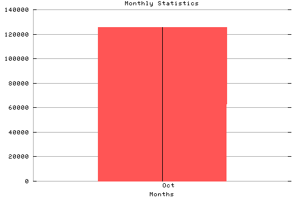

HTTP Server Monthly Statistics
Covers: 10/11/95 to 10/21/95 (11 days).
All dates are in local time.
Oct (10/11/95): 125549 : ##############################################||###

Statistics generated at Sat Oct 21 12:29:22 MET 1995, (C) Oslonett AS, 1995.